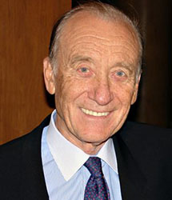
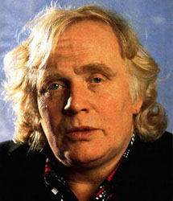
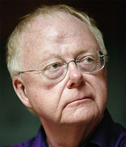
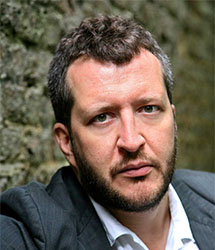

Compositeurs contemporains
Portraits illustrés
- Steve Reich (08/04/2008, rév. 04/07/2014)
- Philip Glass (15/04/2008, rév. 05/07/2014)
-
 Arvö Pärt
(06/05/2008, rév. 08/07/2014)
Arvö Pärt
(06/05/2008, rév. 08/07/2014)
- Alfred Schnittke (28/05/2008, rév. 09/07/2014)
- Einojuhani Rautavaara (17/06/2008, rév. 10/07/2014)
- John Adams (11/08/2008, rév. 24/08/2017)
-
 Valentin Silvestrov
(16/09/2008, rév. 13/07/2014)
Valentin Silvestrov
(16/09/2008, rév. 13/07/2014)
- John Tavener (30/09/2008, rév. 13/07/2014)
- George Rochberg (12/11/2008, rév. 16/07/2014)
- Erkki Sven Tüür (22/12/2008, rév. 17/07/2014)
- James MacMillan (13/01/2009, rév. 18/07/2014)
-  Rodion Shchedrin (24/02/2009, rév. 19/07/2014)
-  Peter Schat (25/03/2009, rév. 20/07/2014)
- Krzysztof Penderecki (24/04/2009, rév. 20/07/2014)
-
 György Ligeti
(03/11/2009, rév. 29/07/2014)
György Ligeti
(03/11/2009, rév. 29/07/2014)
- Alexandre Rabinovitch (01/10/2010, rév. 04/08/2014)
- Gavin Bryars (06/11/2010, rév. 04/08/2014)
- Tristan Keuris (01/12/2010, rév. 04/08/2014)
-
 Olivier Greif
(10/12/2010, rév. 05/08/2014)
Olivier Greif
(10/12/2010, rév. 05/08/2014)
-  Louis Andriessen (17/02/2011, rév. 06/08/2014)
- Per Nørgård (09/01/2012, rév. 12/08/2014)
-
 Mauricio Kagel
(25/04/2012, rév. 14/08/2014)
Mauricio Kagel
(25/04/2012, rév. 14/08/2014)
-
 Hans Werner Henze
(20/06/2012, rév. 14/08/2014)
Hans Werner Henze
(20/06/2012, rév. 14/08/2014)
-
 Theo Verbey
(31/01/2013, rév. 18/08/2014)
Theo Verbey
(31/01/2013, rév. 18/08/2014)
-
 Steve Martland
(03/03/2014, rév. 19/08/2014)
Steve Martland
(03/03/2014, rév. 19/08/2014)
- Murray Schafer (18/11/2014)
- Poul Ruders (02/04/2015)
- George Crumb (30/08/2015)
-  Thomas Adès (02/07/2016, rév. 23/09/2017)